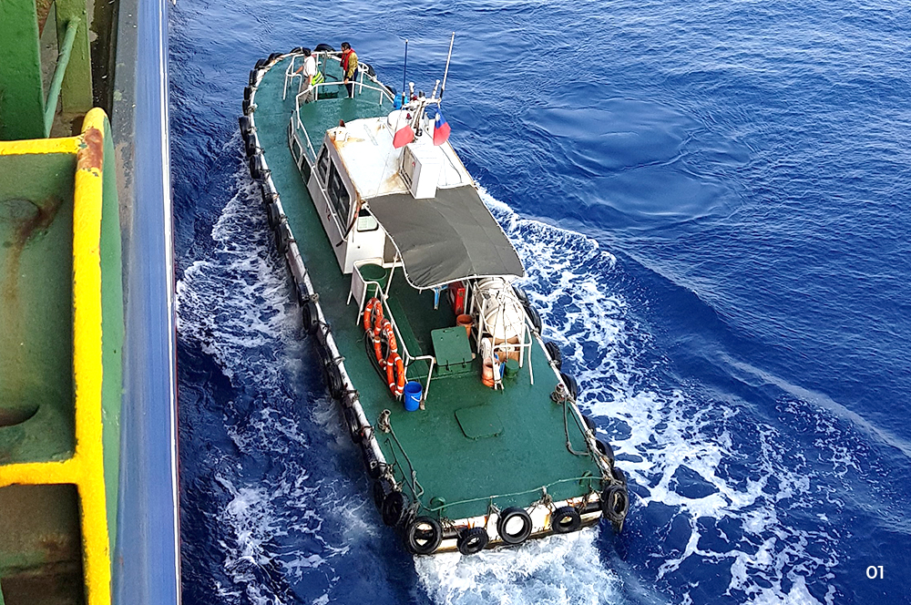
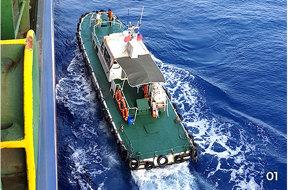
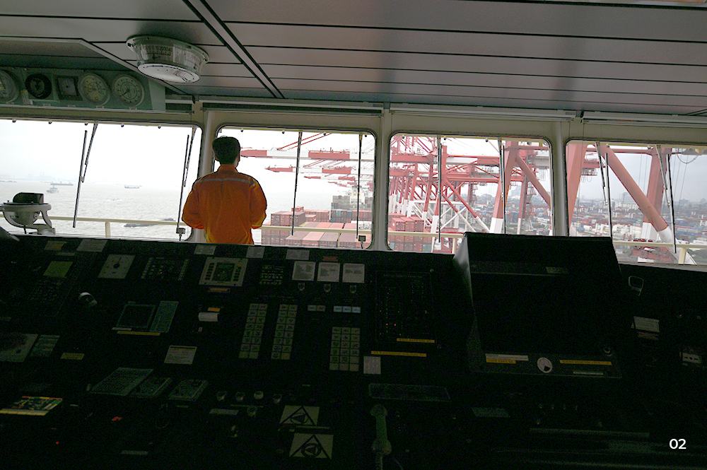
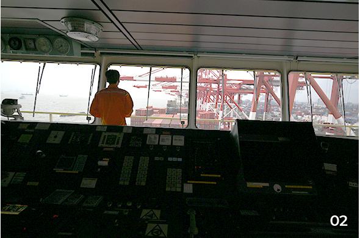
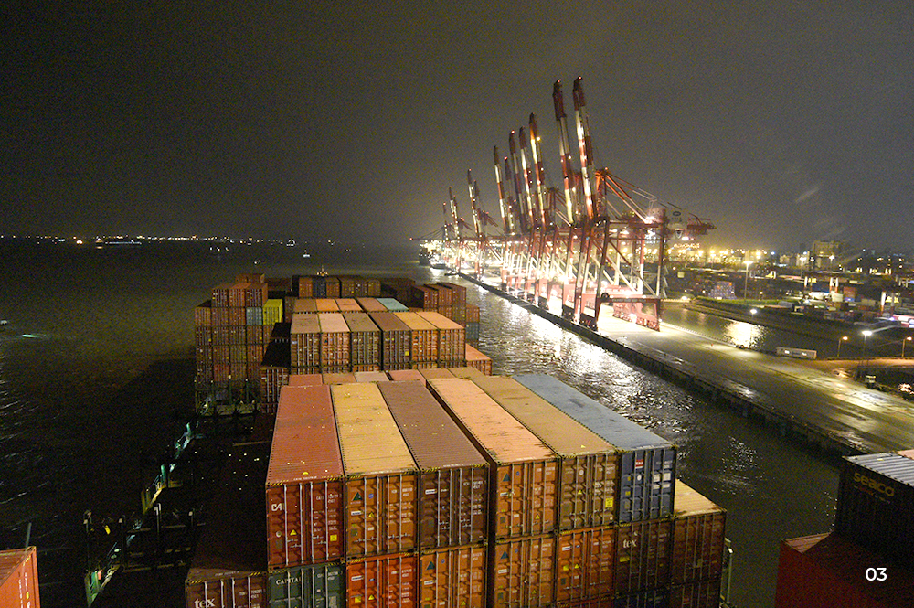
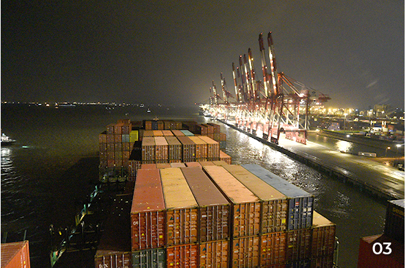

와 제 롤모델이 잡스에요!!! 아이폰 첫 출시되고 나서부터 계속 아이폰 쓰고 있는데 잡스가 너무 그리워요ㅠㅠ 지금은 돈만 벌려고 하는 것 같아서 디자인 발전도 없고ㅠㅠ와 제 롤모델이 잡스에요!!! 아이폰 첫 출시되고 나서부터 계속 아이폰 쓰고 있는데 잡스가 너무 그리워요ㅠㅠ 지금은 돈만 벌려고 하는 것 같아서 디자인 발전도 없고ㅠㅠ와 제 롤모델이 잡스에요!!! 아이폰 첫 출시되고 나서부터 계속 아이폰 쓰고 있는데 잡스가 너무 그리워요ㅠㅠ 지금은 돈만 벌려고 하는 것 같아서 디자인 발전도 없고ㅠㅠ와 제 롤모델이 잡스에요!!! 아이폰 첫 출시되고 나서부터 계속 아이폰 쓰고 있는데 잡스가 너무 그리워요ㅠㅠ 지금은 돈만 벌려고 하는 것 같아서 디자인 발전도 없고ㅠㅠ와 제 롤모델이 잡스에요!!! 아이폰 첫 출시되고 나서부터 계속 아이폰 쓰고 있는데 잡스가 너무 그리워요ㅠㅠ 지금은 돈만 벌려고 하는 것 같아서 디자인 발전도 없고ㅠㅠ
HMM 에세이
현대 커리지호 상하이 출항기
선박이 지연되는 다양한 이유
글·사진
김성민 과장(대외협력실)
지난 11월 13일, 언론사 기자 2명의 승선 취재를 위해 상하이를 방문했다. 상하이에서 출발하는 현대 커리지호에 승선해서 광양까지 동행하며, 해운업에 대한 취재를 지원하기 위함이었다. 우리의 일정은 15일에 출항해 16일에 하선하는 짧은 일정이었으나, 예상치 못한 선박 지연으로 인해 이틀이나 늦어지게 되었다.
지금까지 흔히 들어왔던 선박 지연의 이유는 보통 기상 악화나 항만 혼잡이었다. 실제로 현대 커리지호는 앞서 말한 이유로 인해 예정보다 하루 늦게 상하이항에 입항 했다. 이로 인해 승선취재의 일정은 16일 출항, 17일 하선으로 스케줄이 하루 늦춰졌다. 여기에 더해 도선사의 하선이라는 다소 생소한 문제에 직면하게 되었다.
도선사는 항만, 운하, 강 등 일정한 구간에서 선박에 탑승해 해당 선박을 안전하게 안내하고 선박을 부두에 안전하게 접안시키는 역할을 한다. 도선사는 각 항만의 조류, 수심 등 모든 상황을 파악하고 있어 입출항 시 없어서는 안 될 존재다.


01선박으로 접근하는 Pilot Boat
도선사하선 딜레마에 빠진 현대 커리지호
상하이항의 경우 부산, 광양과 달리 입출항을 하기위해서는 반드시 양쯔강(장강)을 거쳐야 한다. 상하이항을 기준으로 선박이 입항할 시에는 양쯔강의 입구에서 도선사가 승선하여 상하이항에서 하선하고, 선박이 출항할 시에는 상하이항에서 승선하여 양쯔강 입구에서 도선사가 하선한다. 문제는 기후가 나쁠 경우 도선사가 바다 한가운데서 하선을 할 수 없다는 점이었다.
11월 16일 17시에 출항을 앞두고 있던 현대 커리지호는 도선사 하선으로 인한 딜레마에 빠졌다. 기후로 볼 때 양쯔강을 통과해 황해로 나갈 경우 도선사가 하선하기 쉽지 않을 것으로 예측되는 상황이었다. 만약 도선사가 내리지 못한다면 선박은 도선사가 하선할 때까지 연안에서 묘박을 해야 하는 상황이었다.
물론 방법은 있었다. 도선사가 황해까지 가지 않고 양쯔강 안쪽에서 하선을 하는 것이다. 다만 선박의 통행이 많은 양쯔강에서는 안전상의 이유로 낮 시간(Day Time)에만 하선이 가능하고 저녁 시간(Night Time)에는 하선이 불가능했다. 현대 커리지호의 출항 예정 시각인 17시에 출항할 경우 이미 일몰이 시작되어 상하이항에서 양쯔강을 따라 5시간을 항해하면 도선사를 양쯔강 안쪽에 내려 줄 수 없게 된다.


02작업을 마치고 출항을 준비 중인 현대 커리지호
다행히도 현대 커리지호의 상하이항 하역 작업은 12시를 전후로 완료되었다. 빠르게 출항한다면 양쯔강 중간에 도선사를 하선하고 다음 목적지인 광양으로 갈 수 있었다. 그러나 해상직원의 노력에도 불구하고 현대 커리지호의 출항은 앞당겨지지 못했다. 8,600TEU급으로 제법 큰 편에 속한 현대 커리지호의 Darft(물에 잠겨 있는 배의 깊이)는 약 10m였는데 양쯔강의 수심이 얕아 밀물 때인 17시까지 기다려야 했던 것이다.
빠르게 나갈 수 없다면 늦게 나가는 것도 방법이 될 수 있었다. 17일 새벽 무렵 출항을 하게 된다면 마찬가지로 도선사를 양쯔강 안쪽에 하선시킬 수 있기 때문이다. 하지만 수많은 선박이 대기하고 있는 상황에서 작업을 마친 선박이 계속 접안해 있는 것은 어려운 일이었다.


0317시 이후에 상하이항을 출항하는 현대 커리지호
상하이항의 적극적인 협조가 있었다면
결국 현대 커리지호는 16일 17시에 출항을 했고 22시경 양쯔강을 빠져나와 황해에 도착했다. 늦은 밤 거친 파도로 인해 도선사가 하선을 할 수 없는 상황이라 묘박을 해야만 했다. 이튿날인 17일 오전, 파도와 바람이 양호한 상태이기에 선장님은 계속해서 도선사의 하선을 요청했다. 승선해 있던 도선사 역시 빠른 하선을 요청했으나 도선사를 총괄하는 센터의 허가는 17시가 되어서야 떨어졌다.
도선사 하선이 원활했다면 16일 저녁, 최소한 17일 새벽에 광양으로 출발했을 선박이 17일 늦은 저녁이 되어서야 광양으로 출발하게 되었다.
“도선사를 태운 채 배가 하루를 정박하는 것은 매우 이례적인 일이다. 날씨가 악화돼 안전 문제 때문에 도선사가 내리지 못했다고 하지만 (상하이항 측에서) 해결 방법이 전혀 없는 것은 아니었다. 정해진 시간에 목적지에 도착하기 위해 속력을 좀 더 내야 하는 상황이다.” 선박이 황해로 접어들면서 잠시 여유가 생긴 현대 커리지호의 서민수 선장님이 하신 말씀이다.
만약 상하이항 측에서 적극적인 협조가 있었다면, 현대 커리지호가 조금 더 빨리 출항할 수 있지 않았을까? 비록 일정은 지연됐지만, 다양한 악조건 속에서도 정시 운항을 위해 애쓰는 해상직원 및 육상직원 여러분의 노고를 체감할 기회였다.
-
최고예요
322
-
좋아요
322
-
슬퍼요
322
-
그저 그래요
322
-
화나요
322